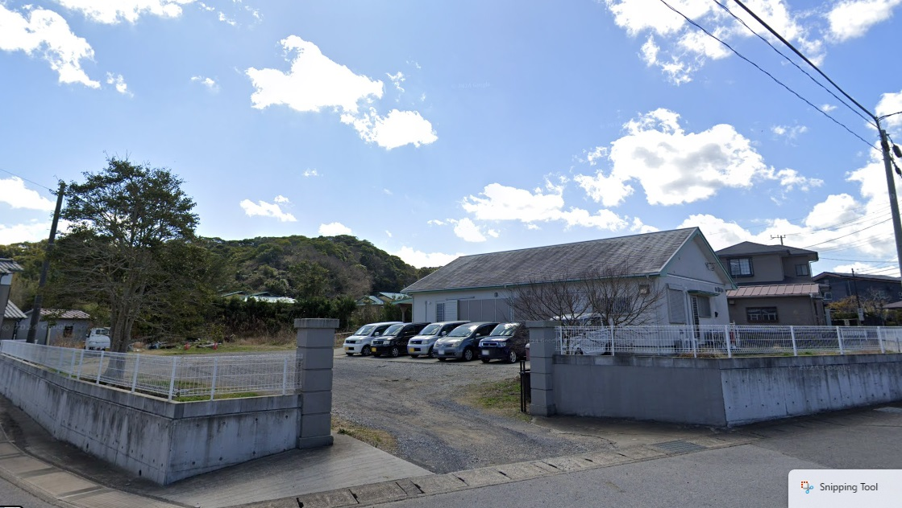

「介護に悩む皆様のお力になりたい」という想いから、平成23年に設立されました。
私たちのモットーは「いいおせっかい」。スタッフとご利用者様の距離が近く、
アットホームな雰囲気の中で、ひとりひとりの声に耳を傾けるケアを大切にしています。
地域に根ざし、迅速な対応で皆様の安心を支え続けます。
「みどり」のホームページをご覧いただき、ありがとうございます。
私は普段から、周囲から『おせっかい』と言われるくらい、困っている人を見かけるとすぐに動いてしまいます。でも、介護の現場において、その「迅速な対応」こそが、ご利用者様やご家族の不安を一番早く解消できる方法だと信じています。
デイサービスでは明るく賑やかなスタッフたちが、居宅介護支援では経験豊富なケアマネジャーが、皆様の『声』をしっかりお聞きします。365日いつでも連絡がつながる体制を整えておりますので、どんなに小さなことでも、お気軽にご相談ください。
所長：菊池 清美
| 区分 | 負担金 | 内容 |
|---|---|---|
| 要介護１ | 735円 | 1回あたりの 利用料 |
| 要介護２ | 890円 | |
| 要介護３ | 1,032円 | |
| 要介護４ | 1,172円 | |
| 要介護５ | 1,312円 | |
| 入浴介助 | 40円 | 1回 |
| 食費 | 600円 | おやつ代込 |
※処処遇改善加算(4%)等が別途加算されます。
相談料は無料です。 介護保険より給付されるため、お客様のご負担はありません。
・福祉サービスを利用したい
・物忘れが心配になってきた
・退院後の自宅生活に不安がある
・離れて暮らす家族が心配
秘密厳守。プライバシーをお守りしますので安心してご相談ください。
株式会社みどり
〒295-0012 千葉県南房総市千倉町南朝夷1582-1
（千倉こども園 正門向かい）
📞 電話：(0470) 28-4323
📠 FAX：(0470) 28-4369
交通のご案内